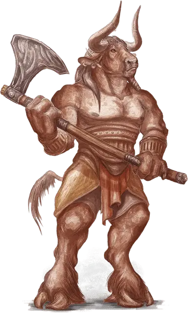

Минотавр
Minotaur
Большой Монстр, хаотично-злой

Класс Доспеха 14 (природный доспех)
Хиты 76 (9к10 + 27)
Скорость 40 футов
| мод | спас | ||
|---|---|---|---|
| СИЛ | 18 | +4 | +4 |
| ЛОВ | 11 | +0 | +0 |
| ТЕЛ | 16 | +3 | +3 |
| мод | спас | ||
|---|---|---|---|
| ИНТ | 6 | −2 | −2 |
| МДР | 16 | +3 | +3 |
| ХАР | 9 | −1 | −1 |
Навыки Восприятие +7
Чувства тёмное зрение 60 футов, пассивное Восприятие 17
Языки Бездны
Опасность 3 (700 опыта)
Бонус мастерства +2
Среда обитания Подземье
Особенности
Атака в броске. Если минотавр переместится как минимум на 10 футов по прямой к цели, а затем в том же ходу попадёт по ней атакой бодания, цель получает от атаки дополнительный колющий урон 9 (2к8). Если цель — существо, она должна преуспеть в спасброске Силы Сл 14, иначе будет оттолкнута на расстояние до 10 футов и сбита с ног.
Запоминание пути. Минотавр может с лёгкостью вспомнить любой пройденный путь.
Безрассудство. В начале своего хода минотавр может решить, что в этом ходу все рукопашные атаки оружием будет совершать с преимуществом, но в этом случае до начала его следующего хода все броски атаки по нему тоже будут совершаться с преимуществом.
Игровой персонаж. Минотавр может стать хорошим искателем приключений. Смотрите описание игровой расы Минотавр в этой статье.
Действия
Секира. Рукопашная атака оружием: +6 к попаданию, досягаемость 5 футов, одна цель. Попадание: Рубящий урон 17 (2к12 + 4).
Бодание. Рукопашная атака оружием: +6 к попаданию, досягаемость 5 футов, одна цель. Попадание: Колющий урон 13 (2к8 + 4).
Описание
Рёв минотавра — дикий боевой клич, которого страшится большинство цивилизованных существ. Созданные в смертных мирах демоническими ритуалами, минотавры — дикие завоеватели и хищники, живущие, чтобы охотиться. Их бурый или чёрный мех запятнан кровью павших врагов, и за ними следует мерзкий запах смерти.
Внутренний зверь. Большинство минотавров — одинокие хищники, бродящие по лабиринтам подземелий, извилистым пещерам, первобытным лесам и запутанным улицам и переходам заброшенных руин. Минотавр прекрасно представляет все пути, которыми можно добраться до добычи.
Запах крови, разрываемая плоть и треск костей пробуждают в нем жажду разрушения, затмевая разум и мысли. В кровавом угаре минотавр с разбегу атакует всех, кого видит, сначала бодая рогами, а потом разрубая сбитого с ног врага надвое.
Помимо создания засад на забредших в их лабиринты существ, минотавры мало заботятся о тактике или стратегии. Минотавры редко действуют организованно, у них нет уважения к иерархии или власти, и их очень сложно поработить, не говоря уже о том, чтобы контролировать.
Культисты Рогатого Короля. Минотавры — тёмные потомки гуманоидов, трансформированных ритуалами культов, которые отвергают гнёт подчинения властям через возвращение в природу. Новобранцы часто принимают эти культы за друидические круги или тотемные религии, но во время их церемоний гуманоидное существо входит в лабиринт, надев звериную маску.
В этом ограниченном пространстве культисты охотятся на диких зверей, убивают их и съедают, утоляя свои первобытные инстинкты. Но в итоге жертвенные животные заменяются на гуманоидную жертву — иногда это новобранец, который пытался сбежать из культа, узнав его истинную сущность. Эти лабиринты превращаются в залитые кровью бойни, по коридорам которых эхом разносится шум от дикого поведения культистов.
Только наивысшим лидерам этих культов известно, что они были созданы демоническим повелителем Бафометом, Рогатым Королём, чей слой Бездны представляет собой гигантский лабиринт. Некоторые из его последователей — пылкие просители, молящие о силе и величии. Другие приходят в культ, ища жизни в свободе от оков властей — а вместо этого их освобождают от их человечности, превращая их в минотавров, вторящих его собственному зверскому обличью.
Несмотря на то, что минотавры были созданы Рогатым Королём, они могут размножаться и нормальным образом, давая миру самостоятельную расу детей Бафомета.